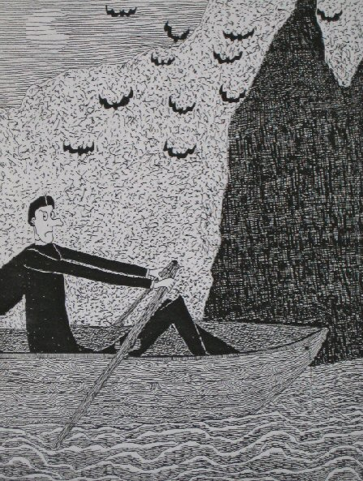

Wednesday, January the 21st, 2009
back to: title, date or indexes
Here is a drawing, copied from a mezzotint by the mezzotintist Rex Tint, showing a Jesuit priest in a rowing boat, rowing away from a cave full of bats.
